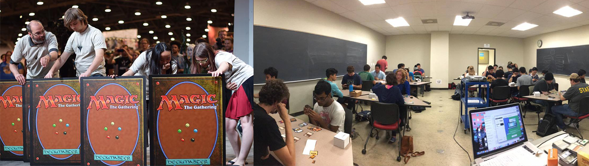
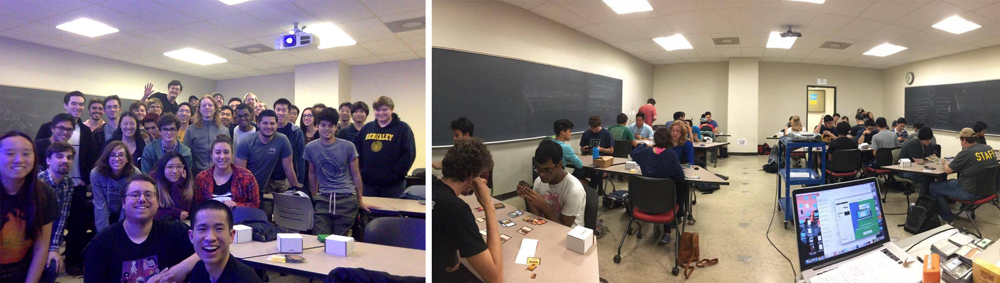

I'm a self-taught UX/UI designer with a love for games, green-tea, sashimi, and high fantasy. I graduated from the University of California, Berkeley in May 2018 where I studied Computer Science for 2 years and earned a degree in English. There are 2 lessons that I've learned in life: 1. Learning is a human and emotional experience. 2. No one deserves to look stupid. These are my principles as a designer. My mission is to create a more empathetic world where we can all better understand each other.
I like to...
Asides from constantly thinking about improving user experiences, I also enjoy reading, eating, playing games with others, learning new skills, and (more recently) developing personal games. I'm currently developing a 2D interactive narative about mental health and anxiety. But other than that, here's a list of some cool(ish) things that I've done:
Magic: the Gathering
I top 8'd in Grand Prix San Jose 2015 playing Magic: the Gathering. The format was Team Sealed. We placed 7th and each individually gained 3 pro points, a handsome check, and many fond memories. :)

Course Instructor
I taught a weekly 1 unit, 2 hour class on Magic: the Gathering to 40 University of California, Berkeley students. I built the curriculum, gave lecture presentations, and organized tournaments in my Fall 2017 semester.

Cosplay
I cosplayed as Overwatch's Widowmaker for San Francisco Comic Con 2016. The community was incredibly kind which made for a very positive experience. This was my first time cosplaying and I would definitely do it again!
Hearthstone Tavern
I established a Hearthstone Tavern at my local mall. The requirements to establishing a Tavern requires hosting 3 Fireside Gatherings. I enjoyed being able to link physical gatherings to the virtual game so doing this was incredibly fun!